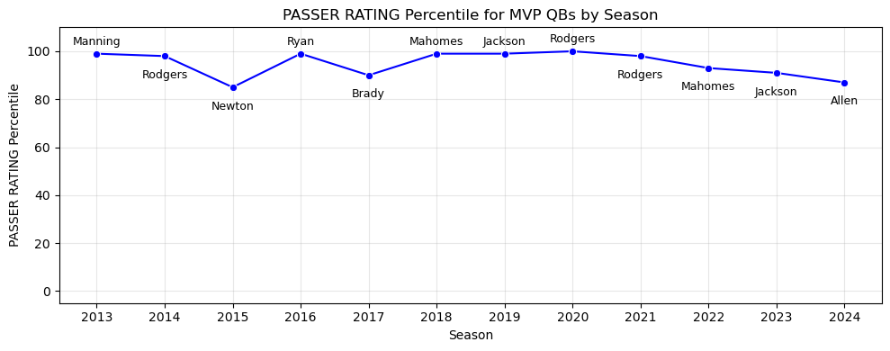
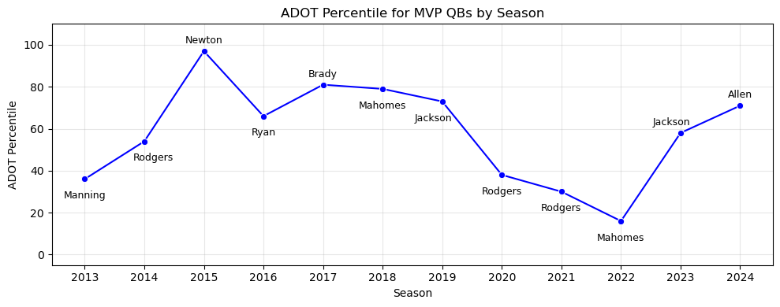
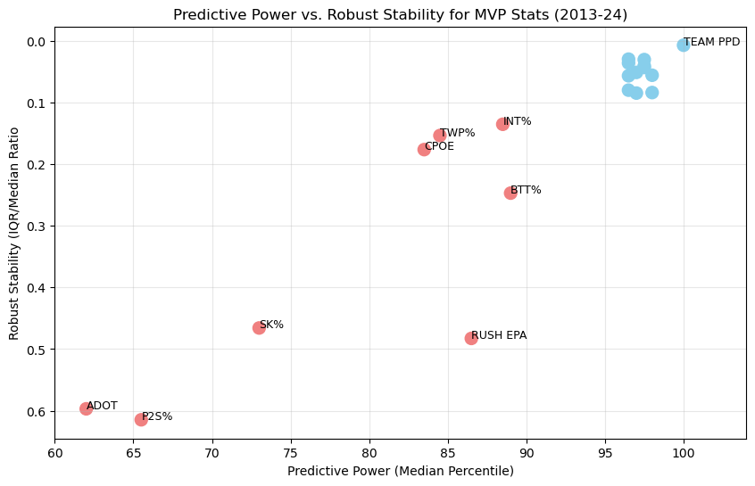
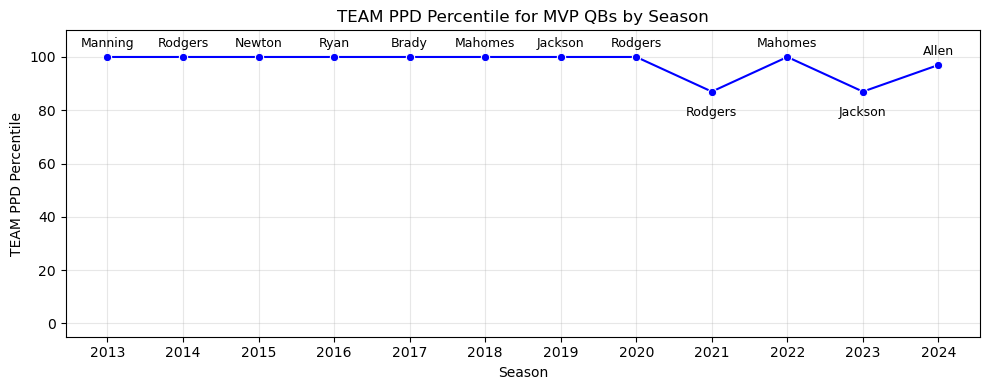
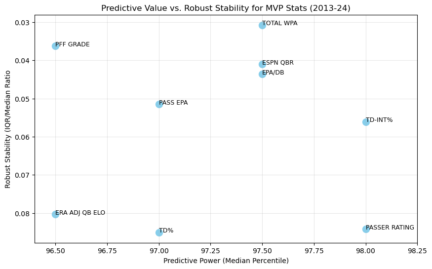
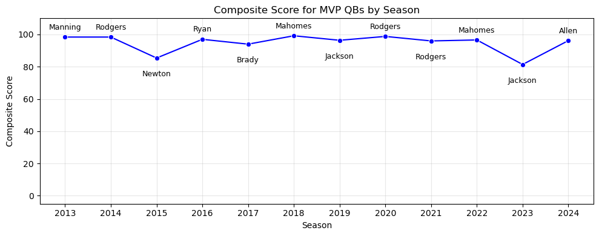
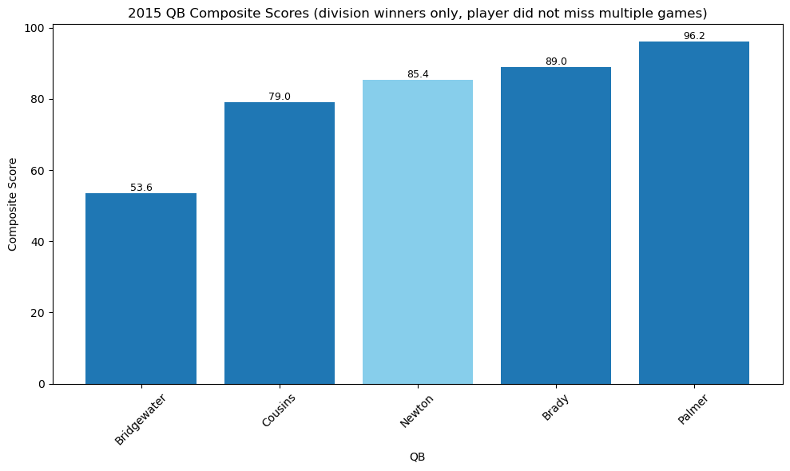
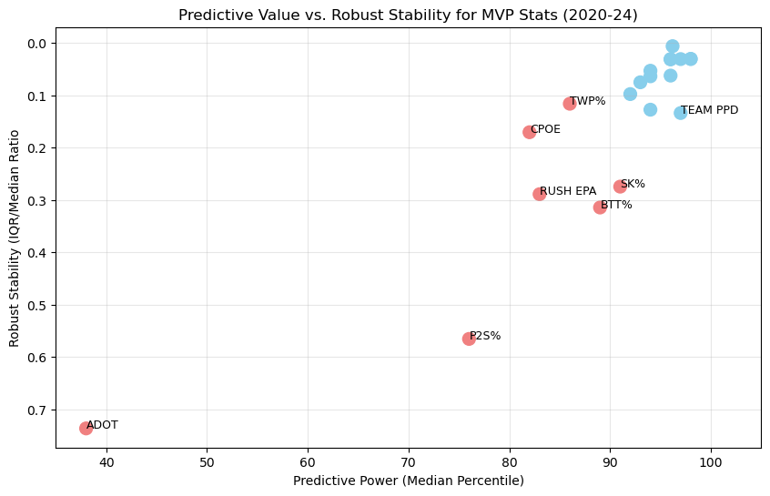
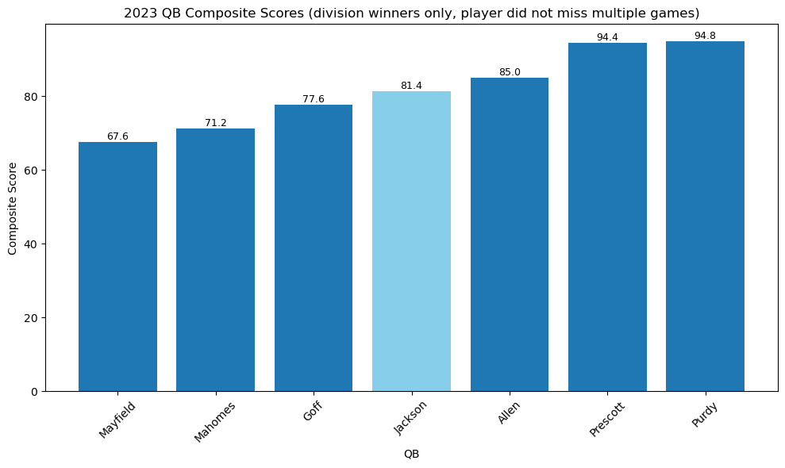
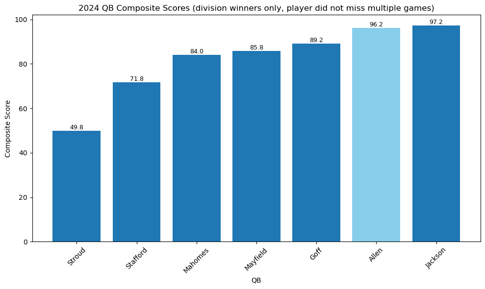

What Makes an NFL MVP?
By Alex Laughlin | January 06, 2026
.jpg)
In the NFL, the most prestigious award an individual can win is the MVP: Most Valuable Player. The player who earns the honor can forever claim they were the best in the world. It’s the greatest achievement a single player can obtain, making it the most coveted award in football. Beyond bragging rights, the MVP is the most important accolade a player can win for their Hall of Fame resume; 34 of the 50 unique AP NFL MVP winners (1971 to present) either already have or are locks to make it into Canton, making winning the trophy the biggest career boost a player can receive. But, how do voters decide who should win the MVP? And can we predict who they will select?
In the current NFL landscape, the MVP is a quarterback’s trophy. The passing game is more efficient than the run, making the quarterback the most important player on the field. Of the last 25 MVPs, only 3 have been non-QBs, all of them running backs. For this study, we’re going to consider the years 2013-24, as the last non-quarterback to win the MVP was Adrian Peterson in 2012.
From these 12 players, we can immediately identify a common denominator; all of their teams won their divisions. This gives us our first and most essential characteristic: to win MVP in today’s league, you have to win your division. Going back even further, only twice since the award was introduced has a quarterback won it without winning their division: Peyton Manning in 2008 and Johnny Unitas in 1967.
Now that we have one qualifier, let’s dig a little deeper. We’ll break down each MVP season by a collection of stats, and compare them to each other to see which can help us predict who wins the trophy. I’m using a package of 17 of the most widely used advanced metrics for this, skipping the basic counting stats like yards and touchdowns. In order to normalize for performance relative to other players in a given season, we won’t use raw stats, but rather percentiles to describe how dominant a player was in that year. For example, we can look at how MVP winners performed relative to their peers in passer rating year-over-year:
Pretty good! When we compare to passer rating to something like ADOT (average depth of target), we can see that one of these metrics is obviously much more predictive than the other:
In order to filter our stats and only preserve the useful ones, we need to see which are the most stable. To achieve this task, we need to compare each stat’s predictive power to its stability. We’ll use median and IQR/median ratio, respectively, to model these qualities. These metrics are a good choice because they’re resistant to outliers, and allow us to not only find what stats are most predictive, but also most stable.
Plotting all of our chosen stats by our chosen axes, we immediately get a clear picture of which stats are not very good for our purposes. We can immediately discard the stats outside of the clump in the top right, as they have low predictive power and stability.
I also want to make note of the very top right stat, team points per drive. This metric is both the most predictive and most stable, leading each category by a wide margin. Let’s quickly take a deeper dive into it:
For almost every year in our set, the NFL team with the highest points per drive’s quarterback won MVP. In fact, it happened 8 years in a row! If we wanted to, we could end here and conclude that division winner + highest points per drive = MVP. While that logic would lead you to the right answer 75% of the time, a pretty good success rate, I’m not willing to end our analysis quite yet. In recent years (3 of the last 4), team points per drive has not been the deciding factor in MVP voting. Later, we’ll dive into why that is, but for now I’m going to remove it and team win percentage, as the point is to determine which quarterback-specific stats, not team stats, lead to MVP awards.
Now that we have a clear visualization of the stats we care about, we need to decide which are the most important. Since the points that remain are all very close in predictive power, I’m going to select the five most stable metrics as the basis of our predictive model: Total Win Probability Added, PFF Grade, ESPN QBR, EPA per Dropback, and TD% - INT% difference. I’m ignoring Pass EPA here because it’s closely associated with EPA per Dropback, and I don’t want to give one stat more weight than the rest.
Having identified our core metrics, I’ll now define a composite score; we’ll take a simple average of our top five stats for each player, giving us an avenue to evaluate MVP candidates and winners.
In terms of success rate, MVP Composite Score correctly predicts 9 of the 12 MVP seasons in our sample, getting it wrong in 2015, 2023, and 2024. Visually, our composite score is very stable outside of two clear outliers: 2015 Cam Newton and 2023 Lamar Jackson. Relative to the other MVPs, these seasons are statistically not as impressive, so what happened? First, let’s travel back to 2015:
Of the five division-winning QBs not to miss multiple games, Super Cam ranks only third among them in composite score. So, why did he still win MVP? Well, if we remember back to earlier when we were looking at points per drive, the Panthers ranked first in that metric right in the middle of the eight-season streak of points per drive leaders taking home the award. The voters’ affinity for that stat during this span, along with the Panthers shocking the world with a league-leading 15-1 record, in spite of perceived talent deficiencies (7-8-1 the year before), are all factors leading to Cam winning MVP honors. While the Cardinals’ Carson Palmer had an MVP-level season, and a statistically better one than Newton, Cam set the league on fire in 2015 with his unique combination of size, speed, and strength. His exciting playstyle and ability to run or pass the ball were key factors in him winning the award, showing how MVP voting can be affected by more than just stats.
It’s important to realize that narratives play a large role in award voting, not just for the NFL MVP in particular, but for all awards across all sports. Our model can only take in raw stats, not narratives, so it will never have a 100% success rate. The falloff of team points per drive as the ultimate predictor of MVPs is a prime example of how narratives influence voting: looking at just the last five years, we see a similar trend as before, but with team points per drive becoming a significantly worse predictor, in large part due to narratives.
So, why did this drop-off occur? An explanation for this change is that some offenses have modified their schemes to become less QB-reliant. The last two years, the leaders in points per drive have been the 49ers (2023) and Lions (2024), neither of which are quarterbacked by elite game-changers. Their play-callers (Kyle Shanahan and Ben Johnson, respectively), however, are widely regarded as two of the best in the league. In the 2010s, the best offenses were led by the quarterbacks most adept at dropping back in the pocket, surveying the field, looking off a defender, and hitting the open man. Today, though, some of the best offenses (the two aforementioned included) thrive off of schemed up looks synthesized by creative play callers, with their quarterbacks’ most important attribute being the ability to throw with anticipation to talented receivers. As a result, having the best offense was no longer as good of a predictor as having the best quarterback. In the 2023 MVP race, this vibe shift took tangible form, exemplifying how narratives shape reality in the NFL.
That’s right – the league MVP in 2023 ranked 4th(!) in composite score. At least in 2015, Cam was third, as well as leading his team to the league’s highest offensive points per game. So, what did Lamar do in 2023 to win MVP despite the lowest composite score of any player in our sample? This one is going to take some explaining.
The 2023 MVP race was a relatively weak one. Even if the leader in composite score this year had won, it would be the third lowest scoring MVP in our sample; The only lower-ranking seasons were 2015 Newton, who we’ve already visited, and 2017 Brady, who became a runaway favorite to win the award in an even weaker year where his only competition suffered a torn ACL in the season’s final quarter.
Unlike 2017, there was no massive gap between one player and the field in 2023. For most of the season, it was a four-man race. As the season progressed, Josh Allen was effectively eliminated as he threw interception after interception, eventually tallying a disastrous 18 on the season. After Week 14, it looked to be between Dak Prescott and Brock Purdy, but Jackson was still hanging around just out of reach. In Week 15, Dak’s Cowboys lost in blowout fashion to the Bills, propelling Purdy to 2:1 odds of winning the award. With a Week 16 win over Lamar’s Ravens, he would all but lock up the MVP trophy. The two players faced off in primetime on Monday Night Football, leading the top two teams in the league. In the biggest regular season game of the season, in front of a national audience, Brock Purdy proceeded to throw four interceptions. The Ravens cruised to an easy win, and with the help of a second consecutive Cowboys loss the day before, Lamar had completed his buzzer-beating MVP heist.
Is it fair that this year’s MVP was decided by late season wins and losses? Probably not. After all, Rodgers’s team lost to Brady’s in Week 1 of 2020, and still edged him out for the MVP. The same thing happened in 2024, when Allen’s Bills fell to Lamar’s Ravens in Week 5. The voters have been consistent in valuing games later in the season more, though. The combination of these late-season letdowns with Purdy’s reputation as a system quarterback and Prescott’s as a choker made them unsavory MVP candidates, and the decision to send the award Lamar’s way easier. I think they got this one wrong, though – Dak Prescott had an incredible season without a great supporting cast, and should not have been put out of MVP contention because of games his team lost down the stretch. Lamar essentially won the award by default, and based on what happened next season, it looks like the voters agree with me.
Lamar Jackson had an unbelievable 2024 season. He led all quarterbacks in composite score. His team went undefeated in the final month of the season. His team blew out Josh Allen’s Bills 35-10 in Week 5. He won first-team All-Pro quarterback honors, an accolade given to the best quarterback in a given season, voted on by the same people that decide the MVP. Only once ever has a quarterback who won MVP without sharing the award not won first-team All-Pro; In 1987, the vote was split between the 49ers’ two best players, so John Elway, the third choice that year, took home the trophy. Since then, ranked choice voting has been introduced to avoid that scenario playing out again. So how did this happen?
Josh Allen had a great season worthy of an MVP in his own right. His composite score of 96.2 is that of a typical MVP season. His team won more games and scored more points per drive than Jackson’s, and he was perceived to have a worse supporting cast (but I’m not convinced that’s really true). The two players were neck and neck, with Jackson having slightly better stats. But Lamar’s award last year was really weak, do we really want to give him another one?
When I noted that the voters deciding All-Pro teams are the same people deciding the MVP, you were probably confused as to how the same voters decided that Jackson played quarterback better in 2024, but Allen was the better player. One AP voter said, “Splitting my ballot was my way of acknowledging that Jackson played quarterback better than anyone this season, while Allen was the defining, and yes, most valuable, football character of the regular season.” This is not the precedent the voters have set for their voting strategies, though. What I think happened is that voter fatigue set in a little bit on Lamar. He had won two MVPs in five years, and his most recent was, in all honesty, not an MVP-worthy season. The voters saw this too, deciding that even if he deserved this award, he didn’t deserve to have three of them. It was a great opportunity to give Allen, a player just as good who had yet to win an MVP, his first meaningful career accolade.
In football discourse, nothing is simple. The MVP is no exception. In order to create a truly accurate MVP formula, you have to weigh player stats, team stats, narratives, injuries, etc… the list goes on. Most importantly, you have to account for the fact that the MVP voters are all just members of the press; these are people of various ages and biases who have varying degrees of football knowledge. The MVP is an imperfect award, voted on by imperfect people; exactly why it’s the perfect award for the sport where the ball isn’t round.